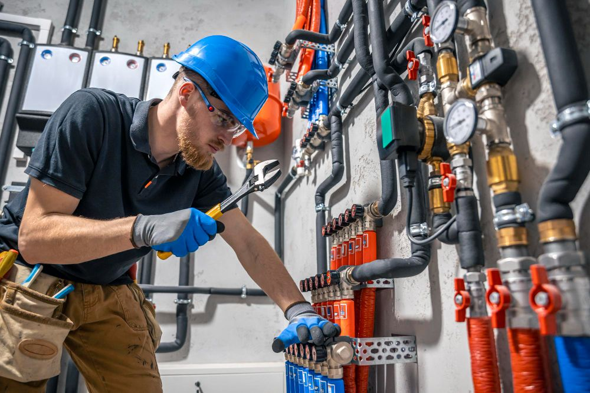

Pipe Inspection
Regular inspections for leaks, corrosion, and water pressure inconsistencies are essential for early detection and prevention of major issues.
View details →
PERFECT PLUMBING CAPE TOWN
Perfect Plumbing aims to provide great services in many parts around the Cape at affordable prices that don't tank the wallets of folks looking for good deals.

Perfect Plumbing is here to provide honest work and quality service at an affordable prices to put your wallets at ease in the Cape Town Areas. The current public Areas address is Buitengracht St, Cape Town City Centre, Cape Town, 8000s, Cape Town.

AREAS TO FIND US
Regular inspections for leaks, corrosion, and water pressure inconsistencies are essential for early detection and prevention of major issues.
View details →Protecting pipes from freezing in winter to avoid bursts and costly repairs is a preventive measure.
View details →This advanced technique uses high-pressure water jets to dislodge debris, grease, and scale buildup inside pipes, effectively cleaning them without harmful chemicals.
View details →These systems use sensors and monitors to detect leaks, track water usage, and alert homeowners to potential issues, reducing waste and preventing damage.
View details →Infrared cameras and acoustic sensors help plumbers pinpoint leaks behind walls or underground, saving time and cost on repairs. Preventive maintenance is crucial for extending the life of plumbing systems. Homeowners can adopt simple measures such as regular inspections for leaks, corrosion, and water pressure inconsistencies. Pipe insulation is also recommended to protect pipes from freezing in winter to avoid bursts and costly repairs.
View details →Using digital tools to help things flow by detect clashes, and coordinate effectively. These techniques not only streamline the construction process but also save time, effort, and resources for years to come. Stay updated on the latest advancements in plumbing to ensure your projects are efficient and effective.
View details →Areas EXPERIENCE
CAPE TOWN
Buitengracht St, Cape Town City Centre, Cape Town, 8000, Cape Town

CONTACT
This form is the end of the Website.